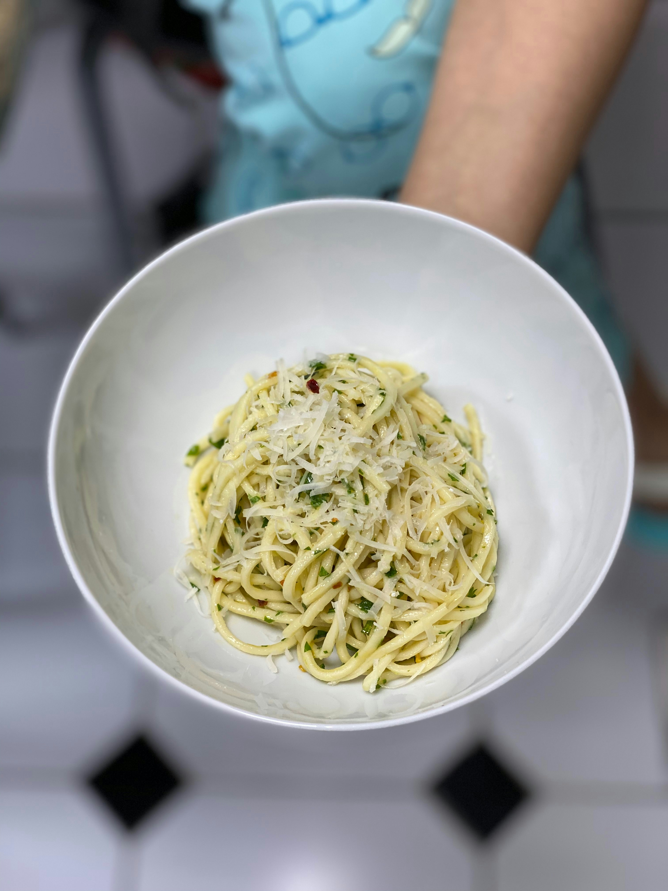

Home
Aglio e Olio Recipe

Description
A delicious oil-based pasta garnished with parsley. Perfect for hot summer days.
For protein, consider adding shrimp!
Ingredients
- 1 pound spaghetti
- 1/2 cup olive oil
- 6 cloves garlic
- 1/4 teaspoon red pepper flakes
- Salt
- Black pepper
- 1/4 cup Italian parsley
Directions
- Bring large pot of salted water to a boil
- Cook spaghetti al dente
- Thinly slice or mince garlic
- Combine olive oil, garlic, and red pepper into a separate pan
- Cook until garlic is golden brown then remove pan from heat
- Save half a cup of pasta water then drain spaghetti
- Place pasta water and spaghetti into the pan
- Mix well while adding salt and black pepper to taste
- Mix in parsley and serve